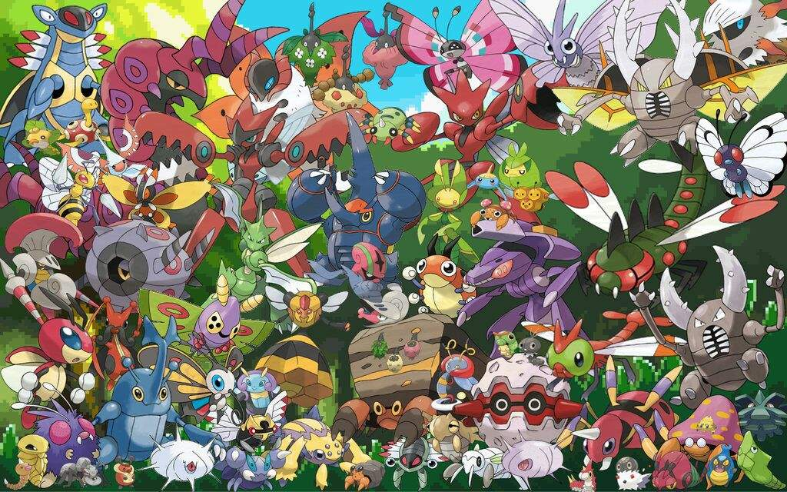
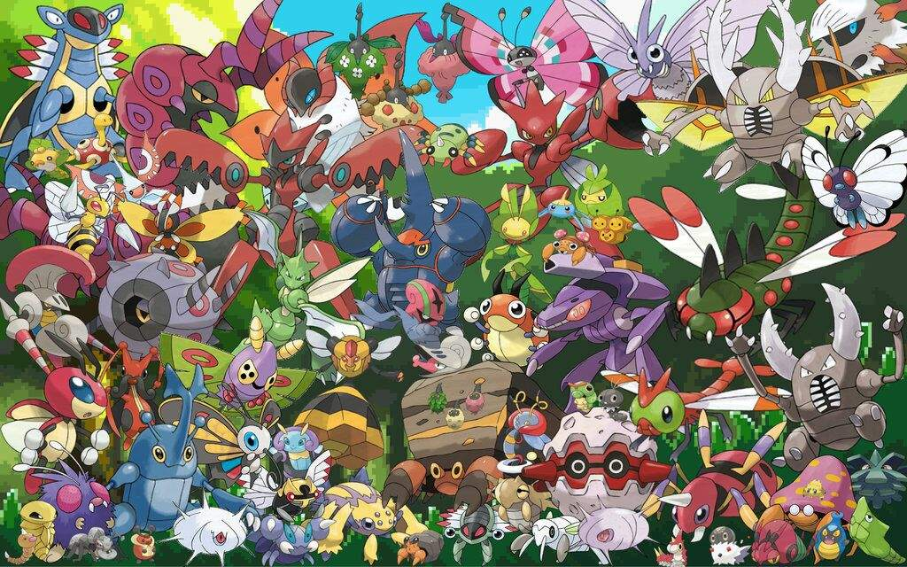

POKEMON
Welcome to the ultimate guide to Pokémon and their types! Since its inception in the 1990s, Pokémon has captured the hearts and imaginations of fans worldwide. With a vast array of creatures known as Pokémon, each possessing unique abilities and characteristics, the Pokémon universe is a rich tapestry of diversity and wonder. At the core of Pokémon are the various species that inhabit the world. From the electrifying Pikachu to the fiery Charizard, Pokémon come in all shapes, sizes, and types. These types are elemental categories that define a Pokémon's strengths, weaknesses, and abilities. Understanding the different types is essential for Trainers looking to build balanced teams and strategize their battles effectively. The Pokémon world features eighteen different types, each with its own strengths and weaknesses. These types include Normal, Fire, Water, Electric, Grass, Ice, Fighting, Poison, Ground, Flying, Psychic, Bug, Rock, Ghost, Dragon, Dark, Steel, and Fairy. Each type is strong against certain types and weak against others, creating a complex web of interactions and strategies. Normal-type Pokémon are versatile creatures with no inherent strengths or weaknesses, making them reliable choices for Trainers. Fire-types, on the other hand, are fierce creatures capable of harnessing the power of flames to incinerate their opponents. Water-types excel in aquatic environments, using their hydrokinetic abilities to wash away their foes. Electric-types command electricity, delivering shocking attacks that can paralyze their adversaries. Grass-types are masters of photosynthesis, drawing strength from sunlight to fuel their attacks. Ice-types wield the power of frost, freezing their opponents with chilling precision. Fighting-types are martial arts experts, delivering powerful blows with their fists and feet. Poison-types utilize toxic substances to weaken and incapacitate their foes. Ground-types manipulate the earth itself, causing earthquakes and fissures to swallow up their opponents. Flying-types soar through the skies, striking from above with aerial assaults. Psychic-types possess extraordinary mental abilities, including telekinesis, telepathy, and precognition. Bug-types are resilient creatures with a knack for adaptation and survival. Rock-types are as sturdy as the mountains they inhabit, shrugging off physical attacks with ease. Ghost-types haunt the shadows, phasing through walls and manipulating the fabric of reality. Dragon-types are majestic creatures with draconic powers that inspire awe and fear. Dark-types lurk in the shadows, striking fear into the hearts of their adversaries with their underhanded tactics. Steel-types are as tough as steel, boasting incredible defensive capabilities and offensive power. Finally, Fairy-types are mystical beings with enchanting powers that can charm and beguile even the strongest opponents. Each Pokémon species belongs to one or more of these types, influencing its abilities, weaknesses, and strengths. For example, the iconic Pikachu is an Electric-type Pokémon, capable of generating powerful electrical currents to zap its enemies. Charizard, one of the most beloved Pokémon, is a Fire/Flying-type, boasting both fiery breath attacks and aerial maneuvers. Understanding type matchups is crucial for Trainers seeking to gain the upper hand in battles. For instance, Water-type moves are super effective against Fire-types but are weak against Electric-types. Similarly, Grass-type moves are super effective against Water-types but are ineffective against Fire-types. In addition to their primary types, Pokémon can also possess secondary types, further diversifying their abilities and strategies. For example, Bulbasaur is a Grass/Poison-type Pokémon, combining the plant-based attacks of Grass-types with the toxic abilities of Poison-types. The Pokémon world is teeming with diverse ecosystems, each home to a unique assortment of Pokémon species. From the lush forests of Viridian Forest to the arid deserts of the Hoenn region, Trainers traverse varied landscapes in search of new Pokémon to catch and train. Throughout their journey, Trainers encounter a wide array of challenges, including battles against other Trainers, Gym Leaders, and even villainous teams bent on world domination. By overcoming these challenges, Trainers strengthen their bonds with their Pokémon and grow closer to achieving their dreams of becoming Pokémon Masters. In addition to battling, Trainers can also participate in a variety of activities, including Pokémon Contests, where Pokémon showcase their beauty, talent, and creativity. Pokémon Contests are a fun and exciting way for Trainers to bond with their Pokémon and showcase their skills in non-combative settings. The Pokémon world is constantly evolving, with new Pokémon species, regions, and adventures introduced with each new generation of games. Whether you're a seasoned Trainer or a newcomer to the world of Pokémon, there's always something new to discover and explore. So come join us on a journey through the world of Pokémon, where adventure awaits at every turn and the bonds of friendship are stronger than steel. Together, we'll catch 'em all and become true Pokémon Masters!
TYPES OF POKEMON
In the vibrant world of Pokémon, diversity reigns supreme, and nowhere is this more evident than in the myriad types of Pokémon that inhabit it. Pokémon are classified into eighteen distinct types, each with its own unique traits, strengths, and weaknesses. These types play a crucial role in battles, determining the effectiveness of moves and strategies employed by Trainers. Firstly, there are the elemental types, including Fire, Water, Electric, Grass, Ice, and more. Fire-types harness the power of flames to scorch their opponents, while Water-types dominate aquatic environments with their hydrokinetic abilities. Electric-types generate powerful electrical currents to shock and paralyze their adversaries, while Grass-types draw strength from sunlight to fuel their attacks. Ice-types freeze their opponents with chilling precision, making them formidable foes in battle. Next, there are the physical types, such as Fighting, Ground, Flying, and Rock. Fighting-types are martial arts experts, delivering devastating blows with their fists and feet. Ground-types manipulate the earth itself, causing earthquakes and fissures to swallow up their opponents. Flying-types soar through the skies, striking from above with aerial assaults, while Rock-types are as sturdy as the mountains they inhabit, shrugging off physical attacks with ease. Psychic-types possess extraordinary mental abilities, including telekinesis, telepathy, and precognition, allowing them to outmaneuver their opponents with ease. Bug-types are resilient creatures with a knack for adaptation and survival, while Ghost-types haunt the shadows, phasing through walls and manipulating the fabric of reality. Dragon-types are majestic creatures with draconic powers that inspire awe and fear, while Dark-types lurk in the shadows, striking fear into the hearts of their adversaries with their underhanded tactics. Steel-types boast incredible defensive capabilities and offensive power, while Fairy-types are mystical beings with enchanting powers that can charm and beguile even the strongest opponents. Understanding the strengths and weaknesses of each type is essential for Trainers seeking to build balanced teams and formulate effective strategies in battles. By mastering the intricate interplay of Pokémon types, Trainers can overcome any challenge and emerge victorious on their journey to become Pokémon Masters.
TYPES OF POKEMON
Fire-Type Pokémon
Fire-type Pokémon are among the most formidable and awe-inspiring creatures in the Pokémon universe. Masters of flames and infernos, these Pokémon possess a fiery spirit that burns bright in battle. From the majestic Charizard to the playful Vulpix, Fire-types come in a variety of shapes and sizes, each with its own unique abilities and strengths. At the heart of Fire-type Pokémon is their affinity for flames. These Pokémon can manipulate fire with precision and control, unleashing devastating attacks that engulf their opponents in scorching heat. With moves like Flamethrower, Fire Blast, and Fire Spin, Fire-types can reduce even the sturdiest of foes to ashes. Fire-type Pokémon are also known for their passionate and determined nature. Fueled by their fiery spirit, they never back down from a challenge, facing their adversaries with courage and determination. This resilience makes Fire-types formidable opponents in battle, capable of enduring intense heat and pressure to emerge victorious. In addition to their fearsome combat abilities, Fire-type Pokémon are also valued companions and allies. Their warm and loyal personalities make them cherished members of any Trainer's team, forging strong bonds of friendship and trust. Whether it's warming their Trainer's heart with a comforting flame or lighting the way through dark and dangerous terrain, Fire-types are always there when needed most. However, Fire-type Pokémon are not without their weaknesses. Their fiery nature makes them vulnerable to Water-type attacks, which can extinguish their flames and dampen their spirits. Trainers must be mindful of these weaknesses and strategize accordingly to ensure their Fire-type Pokémon can shine bright in battle. Overall, Fire-type Pokémon embody the essence of passion, strength, and resilience. With their fiery spirit and blazing determination, they light up the battlefield and inspire Trainers to reach new heights of greatness. So whether you're seeking a fierce competitor or a loyal friend, Fire-type Pokémon are sure to ignite your passion for adventure and discovery in the world of Pokémon.


Water-type Pokémon
Water-type Pokémon are among the most diverse and iconic creatures in the Pokémon universe, renowned for their adaptability, power, and elegance. From the playful Squirtle to the majestic Gyarados, these Pokémon inhabit a wide range of environments, from oceans and rivers to lakes and even urban areas. Their affinity for water makes them formidable opponents in battles and indispensable allies for trainers seeking to navigate aquatic challenges. One of the defining characteristics of Water-type Pokémon is their versatility. They boast an extensive movepool, including powerful Water-type attacks like Hydro Pump, Surf, and Aqua Tail, as well as a variety of other elemental moves such as Ice Beam and Hydro Cannon. This diversity allows Water-type Pokémon to excel in both offensive and defensive strategies, making them valuable assets in any team composition. Water-type Pokémon also exhibit remarkable adaptability to their surroundings. Some, like the majestic Lapras, are capable of traversing vast bodies of water with ease, while others, such as the nimble Greninja, are equally adept at navigating both land and sea. This adaptability not only enhances their survival skills but also makes them valuable companions for trainers exploring diverse environments. Moreover, Water-type Pokémon play a crucial role in maintaining ecological balance within the Pokémon world. Pokémon like Blastoise and Swampert are known for their ability to create and control water, which they use not only for battle but also for nurturing aquatic habitats and supporting local ecosystems. Their presence is vital for the well-being of both Pokémon and humans alike, underscoring the importance of preserving water-based environments. In addition to their practical utility, Water-type Pokémon hold a special place in the hearts of trainers and fans alike. From the adorable Psyduck to the enigmatic Kyogre, these creatures evoke a sense of wonder and fascination, captivating audiences with their diverse designs and captivating lore. Their popularity is evident in various media, including video games, trading card games, and animated series, where they often feature prominently in storylines and merchandise. In summary, Water-type Pokémon are not only formidable battlers and valuable allies but also symbols of adaptability, diversity, and ecological stewardship. Whether they're surfing the waves or exploring underwater caverns, these aquatic creatures continue to enchant and inspire trainers of all ages, ensuring that their legacy endures for generations to come.


Grass-Type Pokémon
Grass-type Pokémon, with their vibrant green hues and connection to nature, are a cornerstone of the Pokémon world, embodying the beauty and power of plant life. From the iconic Bulbasaur to the majestic Celebi, these creatures thrive in forests, meadows, and jungles, harnessing the energy of sunlight and the earth to flourish in diverse environments. One of the defining features of Grass-type Pokémon is their ability to harness the power of photosynthesis, which grants them formidable strength and resilience. This connection to sunlight allows them to absorb energy and convert it into powerful attacks, such as Solar Beam, Leaf Storm, and Energy Ball, making them formidable adversaries in battle. Additionally, many Grass-type Pokémon possess healing abilities, such as Synthesis and Giga Drain, which enable them to replenish their health and outlast opponents in prolonged battles. Beyond their combat prowess, Grass-type Pokémon play a vital role in maintaining ecological balance within the Pokémon world. Pokémon like Shaymin and Leafeon are revered for their ability to promote plant growth and nurture lush habitats, enriching the environment for both Pokémon and humans alike. Their presence is essential for sustaining ecosystems and preserving biodiversity, highlighting the importance of their conservation. Grass-type Pokémon also exhibit a remarkable diversity of forms and abilities, reflecting the rich tapestry of plant life found in nature. From the graceful Roserade to the towering Torterra, each species boasts unique adaptations and characteristics that make them well-suited to their respective habitats. This diversity extends to their movesets, which encompass a wide array of Grass-type attacks, as well as complementary moves like Poison Jab and Earthquake, allowing Grass-type Pokémon to adapt to various challenges and opponents. Moreover, Grass-type Pokémon hold a special place in the hearts of trainers and fans, who are drawn to their tranquil demeanor, elegant designs, and intrinsic connection to the natural world. Whether they're frolicking in sun-dappled meadows or basking in the shade of ancient forests, these creatures evoke a sense of harmony and serenity that resonates deeply with enthusiasts of all ages. In summary, Grass-type Pokémon are not only formidable battlers and guardians of nature but also symbols of growth, renewal, and vitality. Their presence enriches the Pokémon world, imbuing it with the beauty and resilience of the natural world, and inspiring trainers to cultivate bonds of friendship and stewardship with these magnificent creatures.

Electric-Type Pokémon
Electric-type Pokémon are a fascinating subset within the diverse world of Pokémon. Characterized by their electrical powers and often depicted with vibrant designs, they captivate trainers and fans alike with their unique abilities and appearances. From the iconic Pikachu to the formidable Zapdos, Electric-types offer a wide range of options for trainers seeking both strength and versatility in battle. One of the defining traits of Electric-type Pokémon is their mastery over electricity. This elemental power grants them a variety of offensive and defensive capabilities, making them formidable opponents in battles. With moves like Thunderbolt, Thunder Wave, and Thunder Punch, Electric-types can unleash devastating attacks on their foes, often paralyzing them or causing significant damage. Their proficiency in generating and manipulating electricity also allows them to excel in diverse environments, from urban cityscapes to thunderous storms. Beyond their combat prowess, Electric-type Pokémon play crucial roles in various aspects of the Pokémon world. Some, like Pikachu, have become iconic mascots of the franchise, beloved by fans worldwide. Their popularity extends beyond the realm of battles, with merchandise, television shows, and movies featuring these electrifying creatures. Additionally, Electric-types often serve practical purposes in the Pokémon universe, such as powering machines, lighting up dark areas, or providing energy for various tasks. Moreover, Electric-type Pokémon exhibit remarkable diversity in their designs and characteristics. While some, like the sleek and agile Jolteon, embody speed and agility, others, like the bulky and imposing Electivire, emphasize power and resilience. This variety ensures that trainers can find Electric-types to suit their preferred battling style and team composition. Additionally, Electric-types frequently possess secondary typings, further enhancing their versatility and strategic value in battles. Despite their strengths, Electric-type Pokémon also face vulnerabilities, primarily to Ground-type moves. This weakness requires trainers to adopt strategic approaches when facing opponents with Ground-type Pokémon, adding an element of challenge and depth to battles. However, with careful planning and effective team-building, trainers can mitigate these weaknesses and harness the full potential of their Electric-type companions. In conclusion, Electric-type Pokémon stand out as dynamic and compelling creatures within the Pokémon universe. With their mastery over electricity, diverse designs, and strategic importance in battles, they continue to captivate trainers and fans alike. Whether serving as beloved companions, formidable adversaries, or indispensable allies, Electric-types electrify the Pokémon world with their spark of excitement and energy.

Normal-Type Pokémon
Normal-type Pokémon are the unsung heroes of the Pokémon world, often overlooked amidst the flashy abilities and unique typings of their counterparts. While they may lack the elemental strengths and weaknesses of other types, Normal-types possess their own distinct charm and versatility, making them indispensable additions to any trainer's team. One of the defining characteristics of Normal-type Pokémon is their adaptability. Freed from the constraints of elemental weaknesses, they can excel in a variety of situations and environments. Whether traversing rugged terrains, navigating bustling cities, or exploring serene forests, Normal-types thrive where others may falter. This adaptability extends to battles as well, where their lack of weaknesses allows them to endure a wide array of attacks and outlast opponents through sheer resilience. Additionally, Normal-type Pokémon showcase a diverse range of designs and abilities, reflecting the rich tapestry of the Pokémon world. From the iconic Eevee, capable of evolving into multiple distinct forms, to the stalwart Snorlax, known for its formidable bulk and appetite, Normal-types come in all shapes and sizes. This diversity ensures that trainers can find Normal-type Pokémon to suit their preferences and playstyles, whether seeking speedy attackers, sturdy tanks, or supportive team members. Furthermore, Normal-type Pokémon play crucial roles beyond the battlefield. Many serve as beloved companions to trainers, embodying qualities of loyalty, companionship, and trust. Others inhabit the natural world, contributing to ecosystems and habitats with their unique behaviors and interactions. Their presence enriches the Pokémon world, adding depth and nuance to the diverse array of creatures that inhabit it. Despite their perceived simplicity, Normal-type Pokémon are not to be underestimated in battles. With access to a wide range of moves, including powerful attacks like Hyper Beam and Body Slam, as well as status-altering techniques like Sing and Roar, they possess formidable capabilities that can catch opponents off guard. Moreover, their ability to learn moves of other types through TMs and HMs further enhances their versatility and utility in battles, allowing trainers to customize their movesets to suit specific strategies and matchups. In conclusion, Normal-type Pokémon may lack the flashy powers and exotic typings of other creatures, but they more than make up for it with their adaptability, diversity, and understated strength. Whether serving as loyal companions, stalwart defenders, or formidable battlers, Normal-types prove that true greatness lies not in flashy abilities, but in the quiet strength and versatility that they bring to the Pokémon world.


Flying-Type Pokémon
Flying-type Pokémon soar through the skies with grace and majesty, embodying the freedom and boundless expanse of the open air. Renowned for their aerial prowess and diverse abilities, these avian creatures captivate trainers and enthusiasts alike with their stunning designs and impressive capabilities. From the majestic Dragonite to the agile Pidgeot, Flying-types represent a diverse array of species, each with its own unique strengths and characteristics. One of the defining features of Flying-type Pokémon is their ability to take to the skies, granting them unparalleled mobility and maneuverability. With wings spread wide, they navigate the heavens with ease, soaring effortlessly above the earthbound constraints that limit other creatures. This aerial superiority not only allows Flying-types to travel vast distances quickly but also provides them with a strategic advantage in battles, where they can outmaneuver opponents and strike from above with devastating attacks. Furthermore, Flying-type Pokémon showcase a wide range of designs and adaptations, reflecting the rich diversity of avian life in the Pokémon world. From the regal Ho-Oh, whose vibrant plumage symbolizes hope and rebirth, to the sleek and streamlined Skarmory, armored with razor-sharp steel feathers, Flying-types come in all shapes and sizes. This diversity ensures that trainers can find Flying-type Pokémon to suit their preferences and team compositions, whether seeking swift attackers, resilient tanks, or supportive flyers. In addition to their aerial prowess, Flying-type Pokémon often possess secondary typings that further enhance their versatility and utility. Some, like Charizard and Salamence, boast dual Fire typings, combining the power of flames with the freedom of flight to devastating effect. Others, such as Gyarados and Pelipper, wield the dual Water typing, allowing them to dominate both the skies and the seas with equal ease. This dual-typing grants Flying-types access to a wide range of moves and abilities, making them formidable adversaries in battles and invaluable allies to trainers. Beyond their combat capabilities, Flying-type Pokémon play important roles in the ecosystems of the Pokémon world. As masters of the skies, they contribute to the balance of nature by hunting for prey, dispersing seeds, and regulating populations of other flying creatures. Their presence enriches the world around them, adding depth and complexity to the intricate web of life that sustains the Pokémon universe. In conclusion, Flying-type Pokémon stand as symbols of freedom, grace, and power in the Pokémon world. With their ability to soar through the skies, diverse designs, and formidable abilities, they captivate trainers and fans alike with their beauty and strength. Whether soaring through the heavens or battling fiercely on the ground, Flying-types inspire awe and wonder, reminding us of the boundless possibilities that await those who dare to reach for the stars.

Rock-Type Pokémon
Rock-type Pokémon are stalwart beings, forged from the earth itself, embodying resilience and endurance. These creatures, characterized by their rugged exteriors and formidable strength, stand as pillars of stability within the Pokémon universe. From the majestic Golem to the tiny but mighty Geodude, Rock-types command respect and admiration for their unwavering determination and unyielding fortitude. One of the defining traits of Rock-type Pokémon is their unparalleled defensive prowess. Their bodies, composed of hardened minerals and ancient sedimentary layers, serve as impenetrable shields against all manner of attacks. Whether it's deflecting the blows of a ferocious Charizard or shrugging off the thunderous strikes of a Raichu, Rock-types stand firm in the face of adversity. Their resilience is further augmented by their high endurance, allowing them to endure prolonged battles with unwavering resolve. However, the strength of Rock-type Pokémon extends beyond mere defense. Many among their ranks possess formidable offensive capabilities as well. With their powerful physical attacks, they can pulverize opponents with earth-shattering force. From the devastating Rock Slide of a Tyranitar to the seismic upheaval caused by a Rhyperior's Earthquake, Rock-types command the very forces of nature to crush their foes beneath the weight of the earth itself. Yet, despite their formidable strength, Rock-type Pokémon are not without their vulnerabilities. Their reliance on physical prowess leaves them susceptible to agile opponents who can exploit their slower speed and maneuverability. Additionally, their affinity for the earth renders them weak against water-based attacks, which can erode their defenses and wash away their advantage. Beyond battle prowess, Rock-type Pokémon play crucial roles in the ecosystems they inhabit. From towering mountains to deep caverns, these creatures shape the very landscape around them, their presence etched into the bedrock of the world. They serve as guardians of ancient ruins and repositories of geological knowledge, embodying the enduring spirit of the earth itself. In essence, Rock-type Pokémon epitomize the indomitable spirit of the natural world. With their unwavering resilience, formidable strength, and enduring presence, they stand as testaments to the power and majesty of the earth. Whether scaling the highest peaks or delving into the deepest caverns, these stalwart beings continue to inspire awe and admiration in all who encounter them.

Ground-Type Pokémon
Ground-type Pokémon embody the raw power and unyielding stability of the earth itself, forging a deep connection to the land they tread upon. From the majestic Garchomp to the humble Sandshrew, these creatures command respect and awe with their formidable strength and unshakeable resolve. Ground-types are masters of manipulation, wielding the very ground beneath their feet as both a weapon and a shield, making them a force to be reckoned with in any battle. At the heart of the Ground-type's prowess lies their mastery over the earth itself. With their control over seismic forces, they can reshape the terrain to their advantage, summoning forth earthquakes and fissures to devastate their foes. Whether it's the bone-crushing force of a Groudon's Precipice Blades or the engulfing whirlwind of a Flygon's Sandstorm, Ground-types harness the primal forces of the earth to overpower their adversaries with relentless force. Yet, it's not just their offensive capabilities that make Ground-type Pokémon formidable. Their affinity for the earth grants them unparalleled defensive capabilities as well. With their sturdy bodies and resilient hides, they can endure even the most punishing of assaults. Whether it's shrugging off the fiery blasts of a Charizard or weathering the torrential downpour of a Blastoise's Hydro Pump, Ground-types stand firm in the face of adversity, their unyielding resolve matched only by the bedrock beneath their feet. However, for all their strength and resilience, Ground-type Pokémon are not without their weaknesses. Their reliance on physical prowess leaves them vulnerable to agile opponents who can exploit their slower speed and maneuverability. Additionally, their affinity for the earth renders them susceptible to water-based attacks, which can erode their defenses and wash away their advantage. Beyond their battle prowess, Ground-type Pokémon play crucial roles in the ecosystems they inhabit. From arid deserts to lush forests, these creatures shape the very landscape around them, their presence etched into the soil and stone of the world. They serve as guardians of ancient ruins and stewards of the land, embodying the enduring spirit of the earth itself. In essence, Ground-type Pokémon epitomize the unyielding strength and stability of the natural world. With their mastery over the earth and unwavering resolve, they stand as testaments to the power and majesty of the land. Whether traversing rocky terrain or delving into the depths of caverns, these stalwart beings continue to inspire awe and admiration in all who encounter them.

Poison-Type Pokémon
Poison-type Pokémon have long been a captivating aspect of the Pokémon universe, embodying a unique blend of danger, strategy, and often, a touch of eerie charm. From the earliest generations to the most recent additions, these creatures have consistently left their mark on trainers and adversaries alike, both in battles and in the hearts of fans worldwide. At the core of their allure lies their distinctiveness. Poison-types boast a diverse array of forms and abilities, ranging from the classic toxicity of Koffing and Grimer to the more enigmatic designs of Dragalge and Salazzle. This variety not only offers a wide range of aesthetic preferences but also ensures a rich tapestry of strategic possibilities in battles. Their dual typings, often coupled with secondary attributes such as Flying, Ghost, or Psychic, further deepen their complexity, challenging trainers to devise inventive tactics to exploit their strengths and mitigate their weaknesses. In battle, Poison-types excel at wearing down opponents over time, capitalizing on their insidious status-inflicting moves and abilities. Toxic, the quintessential poison move, gradually saps away an opponent's health, making it a potent tool for outlasting foes in prolonged engagements. Meanwhile, abilities like Corrosion enable certain Poison-types to afflict even typically immune Pokémon with poisoning, further expanding their tactical utility. Beyond their prowess in combat, Poison-types also play a crucial role in shaping the narrative fabric of the Pokémon world. Many Poison-type Pokémon inhabit environments tainted by human pollution or natural toxins, serving as poignant reminders of the delicate balance between civilization and nature. Their presence often prompts reflection on real-world environmental issues, underscoring the franchise's capacity for storytelling with real-world relevance. Furthermore, Poison-types frequently feature prominently in the lore and aesthetics of various regions, adding depth and richness to their respective cultural landscapes. Whether revered as guardians of toxic swamps or feared as harbingers of ecological disaster, these creatures leave an indelible imprint on the imaginations of trainers and researchers alike. In conclusion, Poison-type Pokémon stand as a testament to the creativity and depth of the Pokémon universe. From their diverse designs and strategic versatility to their roles in storytelling and world-building, these creatures continue to captivate and inspire fans across generations. As trainers embark on their journeys, Poison-types remain steadfast companions, reminding us of the beauty and complexity inherent in all aspects of the Pokémon world.

Bug-Type Pokémon
Bug-type Pokémon represent a fascinating and often underrated aspect of the Pokémon universe, embodying a diverse array of species with unique characteristics and abilities. From the humble Caterpie to the majestic Volcarona, these creatures captivate trainers with their resilience, adaptability, and, in some cases, surprising power. One of the defining traits of Bug-type Pokémon is their ubiquity in the natural world within the Pokémon universe. Much like their real-world counterparts, Bug-types can be found in a wide range of habitats, from lush forests to arid deserts, bustling cities to remote mountain ranges. This diversity reflects their adaptability to various environmental conditions, making them a fascinating subject of study for researchers and trainers alike. In battles, Bug-type Pokémon often excel in speed and agility, compensating for their relatively lower base stats in other areas. Moves like U-turn and Bug Buzz are staples of Bug-type strategies, allowing these Pokémon to chip away at opponents' defenses while maintaining momentum on the battlefield. Additionally, Bug-types frequently boast secondary typings, such as Flying, Poison, or Psychic, further expanding their strategic versatility and opening up a wealth of synergistic possibilities in team composition. Beyond their combat prowess, Bug-type Pokémon play a crucial role in the ecological balance of the Pokémon world. Many species serve as pollinators, aiding in the reproduction of plants and fostering biodiversity in their respective habitats. Others are integral components of food chains, serving as prey for larger Pokémon or predators themselves, thus contributing to the intricate web of life that sustains the Pokémon ecosystem. In terms of design, Bug-type Pokémon encompass a wide range of forms and inspirations, drawing from diverse insect species as well as other arthropods and invertebrates. This diversity not only showcases the creativity of Pokémon designers but also fosters a sense of wonder and appreciation for the natural world among players. Whether adorned with vibrant colors and intricate patterns or boasting sleek, streamlined silhouettes, Bug-type Pokémon never fail to capture the imagination. In conclusion, Bug-type Pokémon stand as a testament to the rich tapestry of life within the Pokémon universe. From their adaptability and strategic prowess to their ecological significance and captivating designs, these creatures continue to enchant and inspire trainers of all ages. As players embark on their journeys, Bug-type Pokémon serve as steadfast companions, reminding us of the beauty and complexity inherent in the natural world.
 

Ghost-Type Pokémon
Ghost-type Pokémon occupy a uniquely intriguing niche within the Pokémon universe, embodying the ethereal and mysterious aspects of the supernatural. From the hauntingly elegant Gengar to the enigmatic Chandelure, these spectral creatures captivate trainers with their eerie designs, otherworldly abilities, and strategic versatility. At the forefront of their allure is their ghostly nature, which grants them immunity to Normal and Fighting-type moves while also making them resistant to Poison-type attacks. This inherent advantage in battle, coupled with their often high Special Attack stats, positions Ghost-types as formidable adversaries capable of dealing out significant damage while shrugging off many common offensive strategies. Moreover, Ghost-type Pokémon possess a wide array of unique moves and abilities that further enhance their strategic viability. Moves like Shadow Ball, Shadow Claw, and Hex are staples of Ghost-type strategies, allowing these Pokémon to strike fear into the hearts of opponents while bypassing defenses and exploiting weaknesses. Meanwhile, abilities like Cursed Body and Pressure exert additional pressure on opponents, forcing them to think carefully about their actions in battle. Beyond their combat prowess, Ghost-type Pokémon are steeped in lore and mystique, often associated with haunted locations, ancient curses, and tales of the afterlife. Many Ghost-type Pokémon are inspired by folklore and mythology from various cultures around the world, adding depth and richness to their designs and narratives. This infusion of cultural significance not only enhances the immersion of the Pokémon world but also fosters a sense of wonder and curiosity among players. In terms of design, Ghost-type Pokémon encompass a wide range of forms and inspirations, from traditional specters and phantoms to more abstract manifestations of the supernatural. This diversity allows for endless possibilities in terms of aesthetics and themes, ensuring that Ghost-type Pokémon remain consistently intriguing and captivating to fans of all ages. In conclusion, Ghost-type Pokémon stand as a testament to the mystique and allure of the supernatural within the Pokémon universe. From their strategic prowess and eerie designs to their rich lore and cultural significance, these spectral creatures continue to captivate and inspire trainers around the world. As players embark on their journeys, Ghost-type Pokémon serve as reminders of the boundless imagination and creativity inherent in the world of Pokémon.

Psychic-Type Pokémon
Psychic-type Pokémon epitomize the enigmatic and awe-inspiring powers of the mind within the Pokémon universe. From the iconic Mewtwo to the serene Gardevoir, these extraordinary creatures captivate trainers with their profound psychic abilities, elegant designs, and strategic versatility. Central to the allure of Psychic-types is their mastery over psychic energy, which grants them a wide array of potent abilities both in and out of battle. From telekinesis and telepathy to precognition and psychokinesis, these Pokémon possess a myriad of skills that transcend the physical limitations of the world around them. In battles, Psychic-types often excel in Special Attack and Special Defense, allowing them to unleash devastating psychic attacks while also withstanding incoming assaults with ease. Moreover, Psychic-type Pokémon boast a diverse movepool that encompasses a wide range of offensive and supportive options. Moves like Psychic, Psyshock, and Future Sight are staples of Psychic-type strategies, dealing heavy damage to opponents while also providing utility in the form of status ailments or stat boosts. Additionally, many Psychic-type Pokémon possess unique abilities such as Synchronize, Magic Guard, and Telepathy, further enhancing their strategic viability and adaptability in battle. Beyond their formidable combat prowess, Psychic-type Pokémon are deeply intertwined with themes of intelligence, spirituality, and the mysteries of the mind. Many Psychic-type Pokémon are revered as oracles, sages, or guardians of ancient wisdom, adding depth and richness to their lore and narratives. This infusion of mysticism and philosophy not only enriches the Pokémon world but also encourages players to contemplate the nature of consciousness and the interconnectedness of all living beings. In terms of design, Psychic-type Pokémon encompass a wide range of forms and inspirations, from humanoid psychics and mystical creatures to cosmic entities and beings of pure energy. This diversity allows for endless possibilities in terms of aesthetics and themes, ensuring that Psychic-type Pokémon remain consistently captivating and intriguing to fans of all ages. In conclusion, Psychic-type Pokémon stand as a testament to the boundless potential of the human mind within the Pokémon universe. From their awe-inspiring powers and elegant designs to their profound lore and philosophical themes, these extraordinary creatures continue to captivate and inspire trainers around the world. As players embark on their journeys, Psychic-type Pokémon serve as reminders of the limitless possibilities that await those who dare to explore the depths of the psyche.

Fighting-Type Pokémon
Fighting-type Pokémon embody the spirit of determination, discipline, and physical prowess within the Pokémon universe. From the iconic Machamp to the fiery Blaziken, these formidable creatures captivate trainers with their raw strength, tenacity, and unwavering resolve. At the core of their allure is their mastery of hand-to-hand combat, which grants them a formidable array of fighting techniques and martial arts skills. From powerful punches and devastating kicks to agile evasive maneuvers, Fighting-type Pokémon possess a diverse arsenal of moves that allow them to overcome opponents with sheer force and skill. In battles, Fighting-types often excel in physical Attack and Defense, making them formidable adversaries capable of delivering punishing blows while also withstanding incoming assaults with resilience. Moreover, Fighting-type Pokémon boast a wide range of offensive and supportive moves that further enhance their strategic versatility. Moves like Close Combat, High Jump Kick, and Drain Punch are staples of Fighting-type strategies, allowing these Pokémon to deal heavy damage to opponents while also recovering health or boosting their own stats. Additionally, many Fighting-type Pokémon possess unique abilities such as Guts, Iron Fist, and Justified, further augmenting their combat prowess and resilience in battle. Beyond their prowess in combat, Fighting-type Pokémon embody values of honor, discipline, and perseverance. Many Fighting-type Pokémon are revered as symbols of strength and courage, serving as inspirations to trainers and aspirants alike. Their dedication to rigorous training regimens and their unyielding determination in the face of adversity inspire admiration and respect, both in-universe and among fans worldwide. In terms of design, Fighting-type Pokémon encompass a wide range of forms and inspirations, from humanoid fighters and martial artists to fierce animals and mythical creatures. This diversity allows for endless possibilities in terms of aesthetics and themes, ensuring that Fighting-type Pokémon remain consistently captivating and dynamic to fans of all ages. In conclusion, Fighting-type Pokémon stand as a testament to the indomitable spirit and physical prowess within the Pokémon universe. From their formidable combat skills and imposing designs to their values of determination and discipline, these powerful creatures continue to captivate and inspire trainers around the world. As players embark on their journeys, Fighting-type Pokémon serve as reminders of the strength that lies within each individual and the rewards that come from perseverance and dedication.


Ice-Type Pokémon
Ice-type Pokémon, known for their frosty demeanor and chilling powers, inhabit regions of extreme cold, often atop snowy mountains or within icy caves. Their affinity for freezing temperatures makes them resilient in frigid climates, their crystalline bodies adapted to withstand subzero conditions. Among these Pokémon, the majestic Lapras stands out, its gentle nature contrasting with its formidable strength. Resembling a prehistoric creature, Lapras glides gracefully through icy waters, its thick hide protecting it from the biting cold. Its ability to ferry trainers across frozen expanses has made it a beloved companion in regions prone to heavy snowfall. Another iconic Ice-type Pokémon is Articuno, a legendary bird revered for its beauty and power. With wings that shimmer like frost in the sunlight, Articuno commands the very essence of winter. Legends speak of its ability to create blizzards with a mere flap of its wings, blanketing entire landscapes in snow and ice. Its presence inspires awe and reverence among those who encounter it, as it embodies the unforgiving yet breathtaking nature of the icy wilderness. In contrast to the elegance of Lapras and the majesty of Articuno, there are Pokémon like Glalie and Froslass, whose icy visages strike fear into the hearts of those who dare to challenge them. Glalie, with its menacing glare and jagged ice fangs, embodies the raw power of the frozen tundra. Its icy breath can freeze anything it touches, trapping opponents in solid blocks of ice. Froslass, on the other hand, is a spectral Pokémon known for its haunting beauty and deadly allure. Legends tell of lost travelers lured to their demise by Froslass's ethereal voice, only to be frozen solid by its icy embrace. Despite their formidable powers, Ice-type Pokémon face challenges in battle due to their weaknesses to Fire, Fighting, Rock, and Steel-type attacks. However, their resilience and adaptability in harsh environments make them invaluable allies to trainers who venture into icy territories. With their icy breath and frosty powers, Ice-type Pokémon continue to captivate the imaginations of trainers and researchers alike, reminding us of the beauty and danger that lie beyond the snow-capped peaks and frozen landscapes of the Pokémon world.


Steel-Types Pokémon
Steel-type Pokémon, renowned for their formidable defenses and industrial strength, epitomize resilience and durability in the Pokémon world. These metallic creatures, often forged from steel alloys or possessing bodies of iron, excel in both offensive and defensive capabilities, making them sought-after companions for trainers seeking unwavering reliability in battle. Among the most iconic of Steel-types is the legendary Pokémon Steelix, a towering serpent-like creature whose body is encased in hardened steel. With a mighty jaw capable of crushing boulders and a formidable array of metallic scales, Steelix strikes fear into the hearts of opponents as it tunnels through the earth with ease, leaving destruction in its wake. Another notable Steel-type Pokémon is the majestic Metagross, a mechanical marvel with a body comprised of interconnected steel plates. Possessing exceptional intelligence and unparalleled psychic powers, Metagross is a force to be reckoned with on the battlefield. Its four powerful legs allow it to traverse any terrain with ease, while its psychic abilities enable it to manipulate objects and opponents alike with incredible precision. Trainers who earn the loyalty of a Metagross find themselves with a steadfast ally capable of overcoming even the most daunting challenges. In addition to their raw power, Steel-type Pokémon are known for their resilience to a wide range of attacks, including those of the Normal, Grass, Ice, Flying, Psychic, Bug, Dragon, Fairy, and Poison types. This defensive prowess, combined with their offensive capabilities against Fairy, Ice, Rock, and Steel types, makes them formidable opponents in battle. However, they do have weaknesses to Fire, Fighting, and Ground-type attacks, requiring trainers to strategize carefully to mitigate these vulnerabilities. Despite their imposing presence and unmatched strength, Steel-type Pokémon are not without their softer sides. Pokémon like Lucario, with its unwavering loyalty and sense of justice, and Mawile, with its endearing appearance and cunning nature, remind trainers that beneath their metallic exteriors lies a heart of gold. Whether forging bonds with their trainers or facing down formidable opponents, Steel-type Pokémon continue to inspire awe and admiration, proving themselves to be invaluable allies in the ongoing quest to become Pokémon champions.


Dragon-Type Pokémon
Dragon-type Pokémon, revered for their majestic presence and awe-inspiring power, are among the most legendary and sought-after creatures in the Pokémon world. These mythical beings, often depicted as serpentine or draconic in appearance, embody strength, wisdom, and ancient mystery. From the ferocious Dragonite to the enigmatic Rayquaza, Dragon-type Pokémon command respect and admiration from trainers and researchers alike. One of the most iconic Dragon-type Pokémon is Charizard. While primarily known as a Fire/Flying-type, Charizard's Mega Evolution into Mega Charizard X grants it the Dragon typing, unleashing its latent draconic powers. With its fiery breath and formidable wingspan, Mega Charizard X embodies the fiery fury of a dragon, capable of incinerating foes with a single blast of its flames. Its fearsome appearance strikes awe into the hearts of opponents, solidifying its reputation as a true dragon in both appearance and power. Another legendary Dragon-type Pokémon is the awe-inspiring Rayquaza. As the guardian of the ozone layer and master of the skies, Rayquaza is revered as a deity in some cultures. Its emerald scales shimmer with an otherworldly glow, and its vast wings stretch across the heavens. Legends speak of Rayquaza's ability to quell the fury of other legendary Pokémon, bringing balance to the world with its immense power. Trainers who earn Rayquaza's allegiance find themselves blessed with a guardian of unparalleled strength and wisdom. Dragon-type Pokémon are known for their resilience and adaptability in battle, boasting strengths against other Dragon-types as well as resisting Fire, Water, Grass, and Electric-type attacks. However, they are vulnerable to Ice, Dragon, and Fairy-type moves, requiring trainers to employ strategic tactics to overcome these weaknesses. Despite these vulnerabilities, Dragon-type Pokémon remain formidable opponents, capable of unleashing devastating attacks and turning the tide of battle in an instant. Beyond their prowess in battle, Dragon-type Pokémon symbolize the untamed forces of nature and the eternal quest for knowledge and enlightenment. Trainers who journey alongside these mythical creatures are drawn into a world of ancient mysteries and legendary encounters, forging bonds that transcend time and space. Whether soaring through the skies or delving into the depths of ancient ruins, Dragon-type Pokémon continue to captivate the imaginations of trainers and enthusiasts, embodying the eternal allure of the unknown.


Fairy-Type Pokémon
Fairy-type Pokémon, with their ethereal beauty and mystical powers, bring a touch of enchantment to the Pokémon world. These magical creatures, often depicted as cute and whimsical, possess abilities that defy logic and inspire wonder. From the mischievous Sylveon to the regal Gardevoir, Fairy-type Pokémon captivate trainers with their charm and grace, while proving themselves to be formidable adversaries on the battlefield. One of the most beloved Fairy-type Pokémon is the enchanting Sylveon. With its pastel-colored fur and ribbony appendages, Sylveon exudes an aura of innocence and purity. Beneath its adorable exterior lies a fierce competitor, capable of unleashing devastating Fairy-type attacks with precision and grace. Trainers who form strong bonds with Sylveon find themselves blessed with a loyal companion whose unwavering devotion knows no bounds. Another iconic Fairy-type Pokémon is the elegant Gardevoir. Possessing psychic powers and a deep sense of empathy, Gardevoir serves as a guardian and protector to those in need. Its flowing gown and graceful demeanor evoke images of a fairy-tale princess, while its piercing gaze hints at the vast depths of its psychic abilities. Trainers who earn Gardevoir's trust find themselves with a steadfast ally capable of facing any challenge with grace and determination. Fairy-type Pokémon are known for their unique strengths and weaknesses in battle, boasting resistance to Fighting, Bug, and Dark-type attacks, while being weak against Poison and Steel-type moves. This delicate balance of strengths and vulnerabilities requires trainers to employ strategic tactics to maximize their Fairy-type Pokémon's potential in battle. Despite their vulnerabilities, Fairy-type Pokémon possess an innate resilience and tenacity that allows them to overcome even the most daunting of adversaries. Beyond their prowess in battle, Fairy-type Pokémon symbolize the enduring power of hope and the belief in magic. Trainers who journey alongside these mystical creatures are transported to a world of wonder and possibility, where dreams become reality and miracles abound. Whether frolicking in fields of flowers or casting spells with a flick of their wand-like tails, Fairy-type Pokémon continue to captivate the hearts and imaginations of trainers and enthusiasts alike, reminding us that sometimes, the greatest magic of all lies within.

Dark-Type Pokémon
Dark-type Pokémon, shrouded in mystery and intrigue, embody the enigmatic and shadowy aspects of the Pokémon world. With their sleek and intimidating appearances, these creatures command respect and fear in equal measure. From the cunning Umbreon to the fearsome Tyranitar, Dark-type Pokémon possess a diverse array of abilities that make them formidable opponents on the battlefield. One of the most iconic Dark-type Pokémon is the elusive Umbreon. With its jet-black fur and piercing red eyes, Umbreon exudes an aura of mystery and danger. Renowned for its stealth and cunning, Umbreon prowls the shadows, striking swiftly and silently against unsuspecting foes. Its ability to manipulate darkness and unleash powerful Dark-type attacks makes it a valued ally to trainers seeking an edge in battle. Another notable Dark-type Pokémon is the mighty Tyranitar. Towering over its adversaries with its imposing frame and jagged spikes, Tyranitar instills fear wherever it goes. Its rock-hard skin and formidable strength make it virtually impervious to all but the most powerful of attacks. Trainers who earn Tyranitar's loyalty find themselves with a powerhouse capable of decimating entire teams with a single roar. Dark-type Pokémon are known for their resistance to Psychic-type moves and immunity to Psychic-type abilities, making them formidable adversaries against Psychic-type Pokémon. However, they are vulnerable to Fighting, Bug, and Fairy-type attacks, requiring trainers to employ strategic tactics to mitigate these weaknesses. Despite their vulnerabilities, Dark-type Pokémon possess an innate cunning and resourcefulness that allows them to outmaneuver and outsmart even the most skilled opponents. Beyond their prowess in battle, Dark-type Pokémon symbolize the complexities of human nature and the duality of light and shadow. Trainers who form bonds with these enigmatic creatures are drawn into a world of intrigue and deception, where loyalty and betrayal walk hand in hand. Whether prowling in the depths of the night or basking in the glow of the moonlight, Dark-type Pokémon continue to captivate the imaginations of trainers and enthusiasts alike, reminding us that sometimes, it is in the shadows where true strength lies.